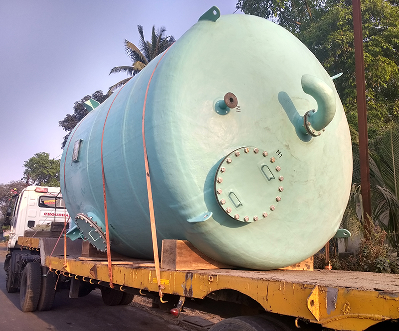
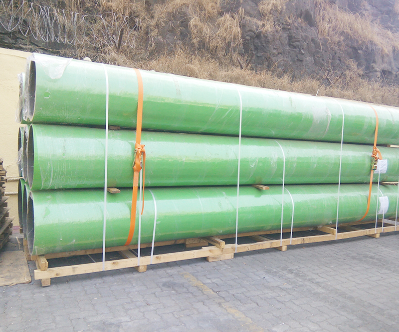
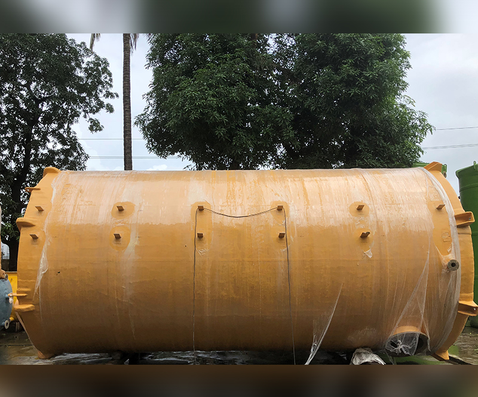

Projects
Selected equipment and systems for demanding industrial environments.
Project gallery
Built for real operating conditions

Storage Tank Systems
Custom FRP and dual-laminate tanks for corrosive chemical storage.

Fume Exhaust Systems
Scrubbing and exhaust systems designed around plant requirements.

FRP Piping
Large-diameter pipes, ducts and fittings fabricated for site conditions.

Process Vessels
Engineered vessels and assemblies for process applications.